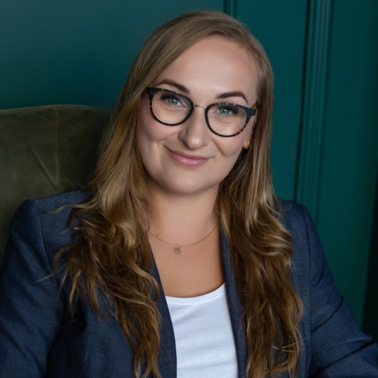
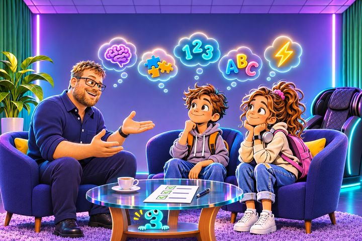
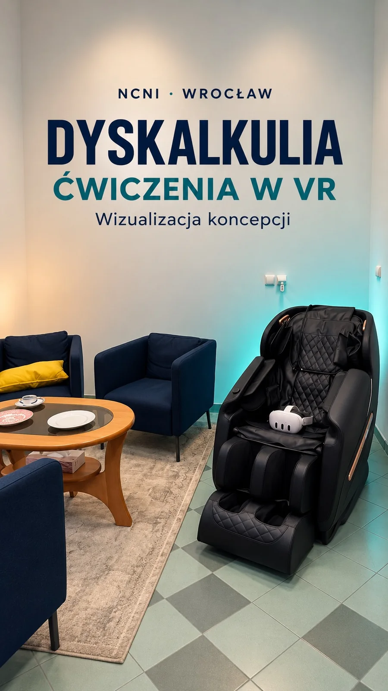

Dyskalkulia:
Matematyka bez Lęku
Dyskalkulia to specyficzne trudności w uczeniu się matematyki. Nie oznacza braku inteligencji, ale inny sposób przetwarzania liczb przez mózg. Pomagamy dzieciom, młodzieży i studentom we Wrocławiu: od pierwszej konsultacji po plan pracy.
Czym jest Dyskalkulia?
Dyskalkulia rozwojowa to specyficzne trudności w nabywaniu umiejętności matematycznych, które mają podłoże neurobiologiczne i nie wynikają z lenistwa ani z braku zdolności. Osoby z dyskalkulią mają trudności z rozumieniem pojęcia liczby, szacowaniem ilości, wykonywaniem prostych działań w pamięci oraz rozumieniem relacji przestrzennych.
W NCNI podchodzimy do problemu u źródła. Zamiast tylko powtarzać tabliczkę mnożenia, pracujemy nad funkcjami poznawczymi, które leżą u podstaw umiejętności matematycznych: pamięcią operacyjną, uwagą i wyobraźnią przestrzenną.
Dla kogo
Rodzic dziewięciolatka, nastolatek przed egzaminem i student z oblanym kolokwium szukają czegoś innego. Dlatego zadania i rozmowę dopasowujemy do wieku.
„Mój syn płacze przy lekcjach”
- liczenie na palcach długo po tym, jak rówieśnicy przestali
- kłopot z zegarem, pieniędzmi i resztą w sklepie
- łatka „leń” albo „nie uważa”
Zadania Pracowni Liczb od 10. roku życia, materiały i bajki, które oswajają liczby. Przy młodszym dziecku zadzwoń, a doradzimy, czy spotkanie ma już sens.
„Przed egzaminem wszystko mi ucieka”
- blokada przed egzaminem ósmoklasisty lub maturą z matematyki
- lęk przed matematyką
- impulsywne błędy w zadaniach otwartych
Sprawdzamy, czy problemem jest rozumienie liczb, czy uwaga i pamięć robocza. Do tego ćwiczenia spokojnego oddechu z pomiarem HRV i materiały na realnych zadaniach egzaminacyjnych.
„Statystyka mnie pokonała”
- oblane kolokwia ze statystyki, analizy lub ekonomii
- chaos w obliczeniach mimo dobrych wyników w innych przedmiotach
- podejrzenie ADHD, które w liceum dało się „przykryć”
Wersja zadań dla dorosłych, plan kompensacji i organizacji nauki, a w razie potrzeby wsparcie psychologa. Spotkania także po angielsku.
Jak wygląda pierwsza wizyta
Pierwsze spotkanie trwa około godziny. Prowadzi je prof. Sebastian Kraszewski. Chcemy zrozumieć, gdzie dokładnie pojawia się trudność z liczbami i co może za nią stać, a potem zaproponować konkretne dalsze kroki.
- Krótka ankieta ok. 5 minNa początku wizyty: kilka pytań o trudności z liczbami, dotychczasową pomoc i samopoczucie przy matematyce.
- Rozmowa ok. 10 minZ czym przychodzisz, co już próbowaliście i co chcesz wiedzieć po spotkaniu. Pytamy też o uwagę, czytanie i stres, bo te obszary często nakładają się na trudności z matematyką.
- Zadania Pracowni Liczb ok. 40 minKrótkie zadania z liczbami. To nie egzamin ani ocena: interesuje nas, jak ktoś pracuje, a nie tylko wynik.
- Omówienie ok. 10 minJeszcze na spotkaniu mówimy, co zauważyliśmy, i proponujemy dalsze kroki.
- Pisemny raport z zaleceniamiPo spotkaniu przygotowujemy raport ekspercki: wyniki zadań, obraz trudności i zalecenia, co robić dalej. Raport jest też punktem odniesienia do ponownego sprawdzenia postępów.
Cały zespół w jednym miejscu: konsultację w razie potrzeby uzupełnia psycholog NCNI. Jeśli w Twojej sytuacji przyda się formalna opinia z poradni psychologiczno-pedagogicznej (np. dla szkoły), powiemy Ci o tym i podpowiemy, jak się do niej przygotować.
Pracownia Liczb NCNI
Pracownia Liczb to autorski zestaw zadań przesiewowych opracowany w NCNI pod kierunkiem prof. Sebastiana Kraszewskiego. Ma osobne wersje dla dzieci i młodzieży oraz dla dorosłych. Sprawdza podstawowe umiejętności liczbowe, na których opiera się cała szkolna matematyka.
Wyniki pomagają odróżnić, z czego najpewniej wynikają kłopoty z matematyką. To ważne, bo każda z tych przyczyn wymaga innego wsparcia:
Pracownia Liczb nie ma jeszcze norm populacyjnych, dlatego traktujemy ją jako narzędzie przesiewowe i punkt odniesienia. Ma też drugą, równoległą wersję zadań do ponownego sprawdzenia po kilku tygodniach pracy, żeby zobaczyć, co się zmieniło.
ADHD czy dyskalkulia?
Słabe oceny z matematyki nie zawsze oznaczają dyskalkulię. Bardzo często za błędami stoją trudności z uwagą i pamięcią roboczą, typowe m.in. dla ADHD. Te dwie rzeczy mogą też występować razem. Od tego, która przyczyna przeważa, zależy, jakie wsparcie ma sens: inne ćwiczenia pomagają przy rozumieniu liczb, a inne przy utrzymaniu skupienia.
Podczas konsultacji porównujemy wyniki zadań liczbowych z zadaniami na uwagę i pamięć roboczą (np. cyfry wspak) oraz z obserwacją pracy. Dzięki temu w raporcie wskazujemy, czy obraz wygląda raczej na trudności z liczbami, raczej na trudności z uwagą, czy na połączenie obu.
Co dalej: jeśli obraz wskazuje na trudności z uwagą, omawiamy kolejne kroki, w tym konsultację z psychologiem NCNI. Więcej o naszym podejściu: ADHD w NCNI.
Zeszyt „Misja: Skupienie”
Darmowy zeszyt do pracy w domu dla dzieci w wieku ok. 9–12 lat: 7 dni po ok. 15 minut. Krótkie wyzwania i zabawy (labirynty, rytmy, sudoku, komiks) pomagają zobaczyć, czy dziecku trudniej skupić się, czy liczyć. Wypełniony zeszyt można przynieść na kolejne spotkanie i omówić.
Materiały testowe i szkoleniowe prof. Kraszewskiego
W NCNI nie korzystamy z przypadkowych kart pracy z internetu. Materiały do sprawdzania umiejętności i do nauki przygotowuje prof. Sebastian Kraszewski (dr hab. inż., prof. Politechniki Wrocławskiej), osobno dla dzieci, młodzieży, studentów i dorosłych.
Pracownia Liczb, forma A
Zestaw zadań na pierwszą wizytę: rozumienie liczb, rachunek, liczby w praktyce, pamięć robocza.
Pracownia Liczb, forma B
Równoległa wersja zadań do ponownego sprawdzenia po kilku tygodniach pracy, żeby zobaczyć zmianę.
Moduł rozszerzony
Dodatkowe zadania dla dzieci 10–16 lat i osobno dla dorosłych: ciągi, ułamki i procenty, szacowanie, zadania z życia, rozumowanie.
Ankieta i rozmowa
Krótka ankieta z pytaniami o lęk przed matematyką oraz plan rozmowy, w którym pytamy też o uwagę i czytanie.
Materiały do nauki pisane pod ucznia
Krótkie kroki, mnemotechniki celowane w powtarzające się błędy, praca na realnych sprawdzianach ucznia.
Zeszyt „Misja: Skupienie”
7-dniowy zeszyt do domu, który pomaga oddzielić trudności z uwagą od trudności z liczbami.
Bajki MISJA: KUMAM!
Krótkie filmy dla dzieci, które oswajają liczby i pokazują, że pomyłka to część nauki.
Kursy dla rodziców i nauczycieli
Szkolenia o pracy z dzieckiem z trudnościami w matematyce. Szczegóły: kursy i szkolenia.
Materiały testowe NCNI to autorskie narzędzia przesiewowe. Dają punkt wyjścia i pozwalają sprawdzać postępy w kolejnych tygodniach.
Kto Ci pomoże
prof. Sebastian Kraszewski
dr hab. inż., profesor Politechniki Wrocławskiej, dyrektor naukowy NCNIProwadzi konsultacje przy trudnościach z matematyką i przygotowuje materiały: zadania Pracowni Liczb oraz materiały do nauki dla dzieci, młodzieży i studentów. Na co dzień pracuje ze studentami Politechniki, więc dobrze zna kłopoty z przedmiotami ilościowymi na studiach.

Daria Cerazy
psychologGdy w matematyce przeszkadza silny stres, lęk przed oceną albo spadek wiary w siebie, można umówić osobną konsultację psychologiczną, także online i po angielsku.
Ceny
Pierwsza wizyta
Ankieta, rozmowa, zadania Pracowni Liczb, omówienie i pisemny raport z zaleceniami.
Dalsza praca
Zakres, liczbę i cenę kolejnych spotkań ustalamy po pierwszej wizycie, według zaleceń z raportu. Cenę zawsze znasz przed spotkaniem.
Indywidualne materiały
Materiały do nauki pisane pod konkretnego ucznia, dobierane według zaleceń. Bez gotowych pakietów.
Podane kwoty są kwotami końcowymi. Pełny cennik NCNI: cennik.
Umów pierwszą wizytęAutorskie materiały edukacyjne dopasowane do profilu neuropoznawczego
Matematyka napisana językiem konkretnego ucznia
Każdy mózg uczy się inaczej. U osób z dyskalkulią, ADHD, zaburzeniami lękowymi czy innymi profilami neuroróżnorodności standardowe podręczniki i korepetycje często nie przynoszą efektu. Nie dlatego, że brakuje zdolności, ale dlatego, że forma przekazu nie jest dopasowana do tego, jak u danej osoby pracuje uwaga, pamięć robocza i regulacja emocji.
W NCNI projektujemy materiały do nauki matematyki od podstaw, pod konkretną osobę. Punktem wyjścia nie jest gotowy zestaw ćwiczeń, lecz zrozumienie, jak uczy się dany uczeń, gdzie się gubi i co go blokuje.
Na czym polega nasze podejście:
Rozpoznanie profilu
Zaczynamy od mocnych stron i konkretnych trudności ucznia, a nie od materiału do przerobienia.
Praca małym krokiem
Materiał rozbity jest na krótkie, zamknięte fragmenty, możliwe do opanowania bez przeciążenia.
Mnemotechniki szyte na miarę
Tworzymy skróty pamięciowe celowane w te miejsca, w których dany uczeń się myli (na przykład powtarzające się błędy ze znakami czy nawiasami).
Oddzielenie rozumienia od liczenia
Osobno trenujemy uważne czytanie poleceń, bo wiele błędów bierze się nie z braku wiedzy, lecz z przeoczenia tego, o co naprawdę pyta zadanie.
Wbudowany rytm pracy
Struktura uwzględnia naturalne wahania uwagi i normalizuje przerwy, zamiast wymuszać nieprzerwany wysiłek.
Język obniżający napięcie
Materiały pisane są w sposób, który zdejmuje lęk i wstyd, normalizuje błędy i nie buduje presji oceny.
Praca na realnym materiale
Korzystamy z programu, sprawdzianów i zadań, z którymi uczeń mierzy się naprawdę, a nie z abstrakcyjnych przykładów.
Efektem jest materiał, z którego uczeń faktycznie chce korzystać, bo jest napisany jego językiem i prowadzi go w jego tempie. Takie podejście wspiera uczniów z dyskalkulią, ADHD, zaburzeniami lękowymi oraz współwystępującymi trudnościami w uczeniu się matematyki.
Sygnały, które mogą niepokoić
- Trudności z odczytywaniem godziny na zegarku analogowym.
- Problemy z szacowaniem odległości, czasu i ilości (np. reszty w sklepie).
- Trudności w opanowaniu sekwencji (dni tygodnia, miesiące).
- Mylenie znaków matematycznych (+, -, x, :).
- Silny lęk przed matematyką ("blokada" w szkole przed tablicą).
Dodatkowe Technologie Wspierające
Poza opracowaniem materiałów, stosujemy nowoczesne metody neurodydaktyczne, które angażują mózg w nowy sposób.
🔢 Trening Poznawczy
Specjalistyczne gry i ćwiczenia komputerowe rozwijające "zmysł liczby" i pamięć roboczą niezbędną do liczenia w pamięci.
🎧 Metoda Warnkego
Usprawnianie przetwarzania słuchowego i wzrokowego oraz koordynacji półkul mózgowych, co wspiera automatyzację procesów liczenia.
MISJA: KUMAM!
Kuba i Zosia to bliźniaki, którym liczby czasem dosłownie uciekają z zeszytu. W bajkach NCNI razem z Liczbusiami i profesorem Sebastianem uczą się, że pomyłka to część nauki, a liczby da się zobaczyć, dotknąć i polubić.
Bajki są krótkie i pokazują w prosty sposób, jak wygląda nasze podejście: bez wstydu, bez presji, krok po kroku. Kolejne odcinki są w przygotowaniu.
Obejrzyj na YouTube
Kadry z komiksowego folderu NCNI. W każdym kadrze ukrył się jeden Liczbuś.
Od materiałów do ćwiczeń w wirtualnej rzeczywistości
W NCNI punktem wyjścia jest poznanie trudności i mocnych stron konkretnej osoby. Na tej podstawie przygotowujemy indywidualne materiały edukacyjne. Obok tego podejścia rozwijamy koncepcję ćwiczeń VR, które pozwolą przedstawiać liczby poprzez obiekty, odległości i relacje w przestrzeni.
Chcemy, aby uczeń mógł porównywać liczebność dwóch grup, łączyć mniejsze zbiory w większe i poznawać oś liczbową poprzez równe odstępy. Jedno zadanie naraz, czytelne otoczenie i tempo dostosowane do osoby uczestniczącej. To rozwijana koncepcja, a nie gotowa aplikacja dostępna obecnie w ofercie.
Rozumienie liczb i praca z napięciem
Ćwiczenie umiejętności matematycznych i praca nad napięciem to dwa odrębne obszary wsparcia. Rozmowa ze specjalistą pomaga zrozumieć, co utrudnia naukę i w jakich sytuacjach pojawia się stres.
Pomiar HRV może uzupełniać tę rozmowę o informacje o zmienności rytmu serca. Wynik interpretujemy w kontekście oddechu, ruchu, warunków pomiaru i samopoczucia. Nie jest to test rozpoznający dyskalkulię ani bezpośredni odczyt emocji.
Biofeedback może wspierać naukę spokojnego oddychania i obserwowania reakcji organizmu. W rozwijanej koncepcji chcemy wykorzystać to jako uzupełnienie przygotowania do ćwiczeń. Dobór i przebieg wsparcia wymagają indywidualnego omówienia ze specjalistą.
Porozmawiaj o dostępnym wsparciu
Najczęstsze pytania
Co daje konsultacja?
Konsultacja pokazuje, gdzie dokładnie leży trudność z liczbami i co może za nią stać, a raport daje konkretny plan wsparcia. W razie potrzeby konsultację uzupełnia psycholog NCNI. Jeśli przyda się formalna opinia z poradni psychologiczno-pedagogicznej, powiemy o tym.
Czy konsultacja zastępuje poradnię psychologiczno-pedagogiczną?
Nie zastępuje, ale może ją dobrze uzupełnić. Raport z zadaniami i obserwacjami może pomóc rodzicom w rozmowie ze szkołą lub poradnią. Jeśli formalna opinia z poradni będzie potrzebna, powiemy o tym wprost.
Od jakiego wieku można przyjść?
Zadania Pracowni Liczb mają wersję dla dzieci i młodzieży 10–16 lat oraz wersję dla dorosłych, w tym studentów. W przypadku młodszego dziecka zadzwoń, a wspólnie ocenimy, czy spotkanie ma już sens.
Jak przygotować się do wizyty?
Wystarczy przyjść wypoczętym. Okulary, jeśli są używane. Warto zabrać zeszyty, sprawdziany lub wcześniejsze opinie, jeśli są. Kalkulator i telefon nie będą potrzebne.
Ile trwa spotkanie i co dostanę?
Pierwsza wizyta trwa około godziny. Wstępne omówienie odbywa się na miejscu, a po spotkaniu otrzymujesz pisemny raport z wynikami zadań i zaleceniami.
Czy dziecko z ADHD lub lękiem przed matematyką też może przyjść?
Tak. Trudności z uwagą, pamięcią roboczą i stres przy matematyce często nakładają się na kłopoty z liczbami. Część zadań i rozmowy pomaga właśnie odróżnić te przyczyny, bo każda wymaga innego wsparcia.
Moje dziecko ma ADHD albo podejrzewam ADHD. Czy to może być też dyskalkulia?
Tak, te trudności mogą występować razem albo się mylić. W czasie konsultacji porównujemy zadania liczbowe z zadaniami na uwagę i pamięć roboczą. W raporcie wskazujemy, która przyczyna wydaje się przeważać i jakie wsparcie ma sens, a w razie potrzeby włączamy psychologa NCNI.
Od czego zacząć, jeśli podejrzewam dyskalkulię?
Dobrym pierwszym krokiem jest konsultacja w NCNI we Wrocławiu (450 zł, ok. 60 min) z prof. Sebastianem Kraszewskim. Po niej wiesz, gdzie dokładnie leży trudność, dostajesz raport z zaleceniami i wiesz, czy formalna opinia z poradni jest w Twojej sytuacji potrzebna.
Kto przygotowuje materiały?
Materiały testowe (Pracownia Liczb) i materiały do nauki przygotowuje prof. Sebastian Kraszewski, dr hab. inż., profesor Politechniki Wrocławskiej i dyrektor naukowy NCNI. Są osobne wersje dla dzieci, młodzieży, studentów i dorosłych.
Porozmawiajmy o liczbach
Umów pierwszą konsultację i sprawdź, jak możemy pomóc Tobie lub Twojemu dziecku uczyć się matematyki bez lęku. Zadzwoń: 600 608 333.
Umów konsultację